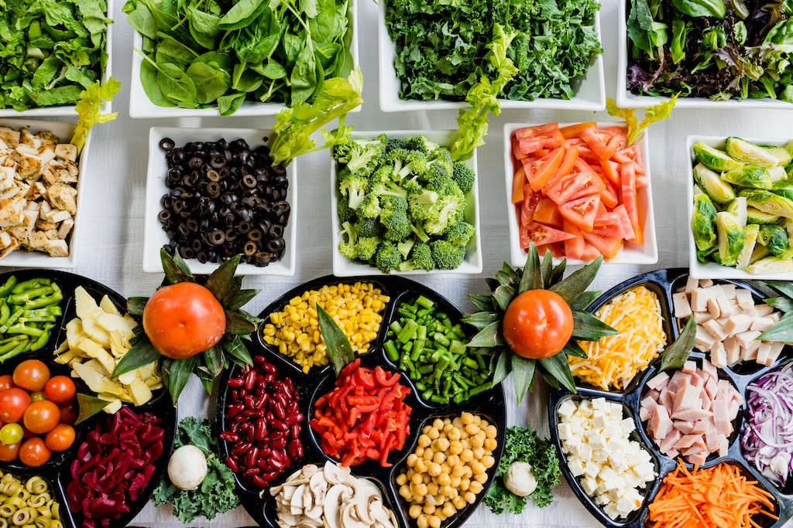

Dish Recipes

Scrambled eggs with ham
It is necessary to take:
- Egg 2 pcs.
- Ham 50 g
- Cream Cheese 50 g
- Olive oil 1 tbsp.
- Salt to taste
- Greens to taste
- Fry the diced ham, beat in the eggs, and sprinkle with cheese on top. Fry no more than 3-4 minutes, add herbs and can be served.
Egg Omelet with Bacon
- Egg2 pcs.
- Bacon2 slices
- Butter1 tbsp
- Cream100 g
- Salt to taste
- Red pepper to taste
- Frying the bacon over high heat on both sides, we drive in the eggs, pepper, and salt. Tamim about 15 minutes on low heat.
Grilled vegetables
For the recipe you will need:
- Sweet pepper200 g
- Onion2 pcs.
- Olive oil2-3 tbsps.
- Olives1 b.
- Caper1 b.
- Pepper to taste
- Salt to taste
- Vinegar to taste
- Spread onion and pepper evenly on the grill and cook on each side for no more than 5 minutes. Then you need to cut into cubes or strips and mix with the rest of the ingredients in a salad bowl, salt, and pepper.
Baked Turnip
- To prepare it, you should take:
- Hard cheese 150 g
- Turnip 400 g
- Egg1 pc.
- Sour cream100 ml
- Oil to taste
- Salt to taste
- Pepper to taste
- Purified turnip should be boiled in a saucepan for at least an hour. Then cool and knock in a blender with fat sour cream and butter. Then add cheese, egg and mix well once again. Pour such mashed potatoes in individual molds and bake in the oven until a beautiful crust is formed at a temperature of no more than 170 degrees. In the end, sprinkle with finely chopped herbs.